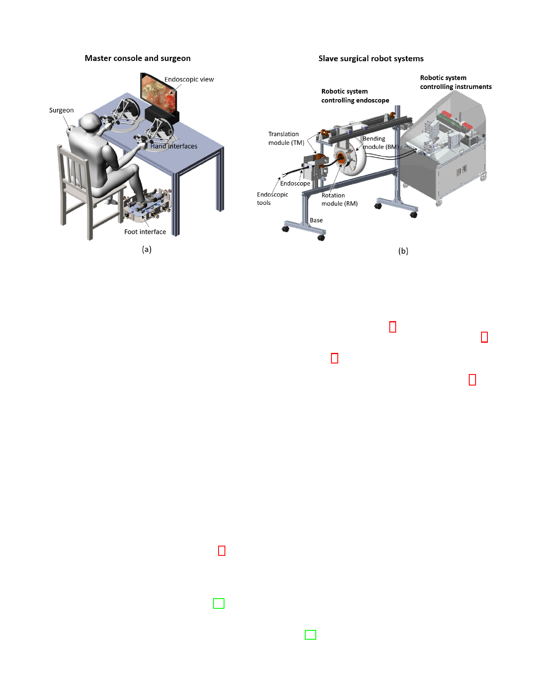

2
Fig. 1. Overview of the foot-controlled robotic endoscope teleoperation system. (a) Master console and surgeon. (b) Slave surgical robot systems, one for
the endoscope and one for the two endoscopic instruments.
displaces the endoscope inside the body with the foot to
operate with the two instruments commanded by the hands.
This paper presents: 1) The design, intuitive motion map-
ping, and features of the robotic teleoperation system, with a
novel foot-controlled robotic endoscope; 2) A demonstration
of an endoscopic surgical task on an ex-vivo porcine stomach;
3) A comparison of simultaneous three tools operation with se-
quential control using hand-clutch. Two supplementary videos
are provided to show the endoscope control by the foot and
the three-limbs operation using this system. Section II presents
the working principle and design concept of the proposed
system. Section III describes the mechanical structure of
the master and slave devices of the teleoperation system.
A user study with ex-vivo tests and results is presented in
Section IV. Section V discusses the results as well as the
work’s contributions and limitations, and Section VI provides
a conclusion.
The four DoFs of the endoscope are controlled by foot
motions: 1) The foot pitch DoF θf control U/D bending of
the endoscope distal tip θe (Fig. 2b); 2) The foot yaw DoF φf
map to L/R bending of the endoscope distal tip φe (Fig. 2c);
3) Foot forward/backward motion yf control endoscope in/out
motion ye (Fig. 2d); 4) The endoscope rotates γe along itself
when the foot and shank conduct lateral rotations around the
thigh, reflected as foot left/right translations xf (Fig. 2e).
This mapping is intuitive because the selected movements
of the foot are similar to the corresponding movements of the
endoscope (as shown in video 1). For instance, the forefoot
rotation around the ankle, can be intuitively regarded as the
bending tip of the endoscope. The operator can take the
foot and shank as the endoscope for metaphor. The foot can
remote control the endoscope intuitively through isomorphic
mapping. The foot-controlled human-machine interface and its
manipulation are introduced in Section III-C and Section IV-A.
II. WORKING PRINCIPLE
A. Foot movements to control a flexible endoscope
The flexible endoscope used in this study is the standard
gastrointestinal scope (GIF-2T160, Olympus Medical Sys-
tem Corporation, Tokyo, Japan) shown in Fig. 2a. It has a
tube diameter of 12.6 mm and maximum insertion length of
103 mm, which is long enough to reach the surgical site of
colon or stomach in gastrointestinal endoscopic surgery. The
endoscope consists of a bending section (including the distal
tip), insertion tube, and the control section [22]. The two
knobs located on the control section can drive the two-DoF
of up/down (U/D) (θe) and left/right (L/R) angulation (φe) of
the bending section. The other two DoFs are in/out translation
(ye) along the longitudinal axis and the rotation around the
same axis (γe).
B. Three-limbs control concept
Existing systems in the literature require the surgeon to
cooperate with another person during operation with associ-
ated potential communication issues. Our objective is thus to
allow one operator to control three tools simultaneously in a
natural and intuitive way. Compared to sequential operation
of multiple tools, the surgeon can control the endoscope and
two instruments either simultaneously or sequentially. This
supports flexible surgical operation and contributes to the
efficiency in complicated surgical tasks in particular for novice
surgeons.
However, for the operator, simultaneously controlling three
limbs may increase the mental effort compared to bi-manual
control [23]. To minimise the mental effort of the three-tool
control, the allocation of the operation for hands and foot
corresponds to the natural neural control and ergonomics.